สารบัญ
วาดภาพ แล้วนำ LaTeX ไปใช้ได้เลย
DiagramTeX เป็นตัวแก้ไขแผนภาพที่สร้างโค้ด TikZ วาดด้วยเมาส์ พิมพ์ป้ายด้วย LaTeX แล้ววางโค้ดในเอกสารของคุณ คู่มือนี้บอกวิธีทำแต่ละอย่างทีละขั้น
- ฟรีและเปิดเผยซอร์สโค้ด
- ทำงานออฟไลน์
- ไม่ต้องมีบัญชี
- เอกสารอยู่ในเบราว์เซอร์ของคุณ
เลือก 🇬🇧 หรือ 🇹🇭 บนแถบด้านบนเพื่อเปลี่ยนภาษาของคู่มือและบันทึกภาษาที่ต้องการบนอุปกรณ์นี้ ในตัวแก้ไขก็มีตัวเลือกธงเช่นกัน ครั้งแรกจะใช้ภาษาอังกฤษ ข้อความที่ยังไม่มีคำแปลจะแสดงเป็นภาษาอังกฤษ ชื่อไฟล์ เนื้อหาเอกสาร สูตร และโค้ดส่งออกจะไม่เปลี่ยนตามภาษาของส่วนติดต่อ
เริ่มต้นใช้งาน
- วาด เลือกเครื่องมือทางซ้าย: L เส้น R สี่เหลี่ยม T ข้อความ
- พิมพ์สูตร เขียนระหว่าง
$…$เช่น$\vec F = m\vec a$ - คัดลอก TikZ กด CtrlE แล้วคลิก คัดลอก
- วางแล้วคอมไพล์ วางในเอกสาร โหลดแพ็กเกจตามบรรทัดแรก แล้วคอมไพล์ด้วย pdfLaTeX
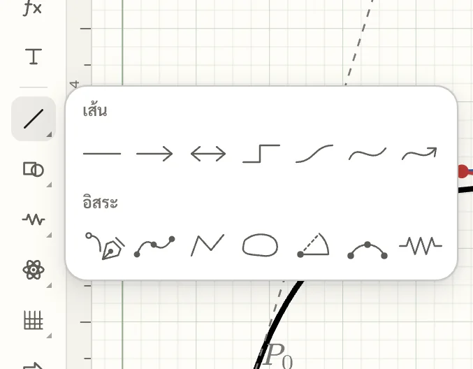
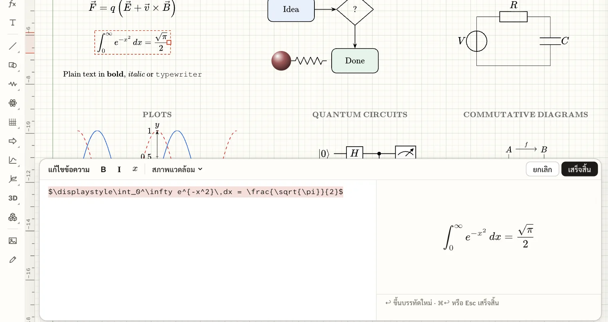
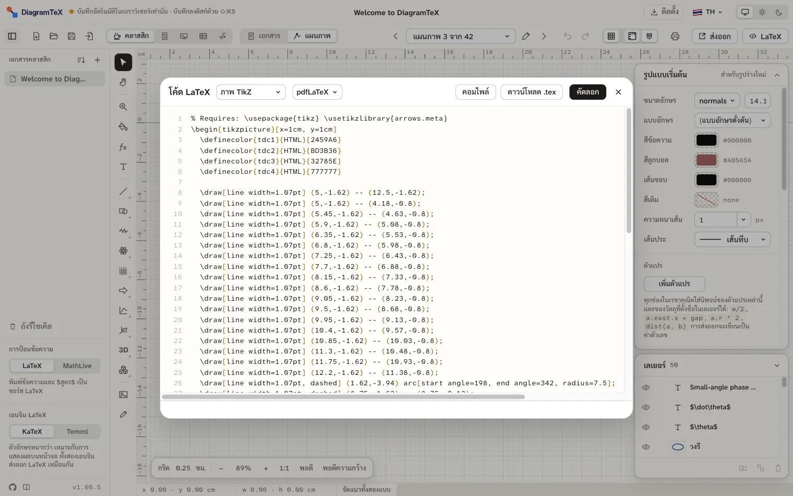
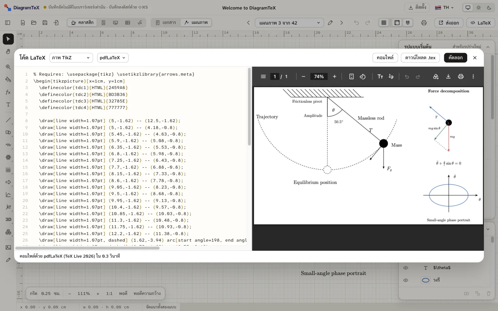
- เรียนจากตัวอย่าง: เปิดไฟล์ต้อนรับแล้วดับเบิลคลิกวัตถุใดก็ได้เพื่อดูวิธีสร้าง
- ดูทัวร์: กด CtrlK แล้วพิมพ์ “ทัวร์แนะนำ”
- ใช้แบบออฟไลน์: คลิก ติดตั้ง ที่มุมขวาบน แล้วคลิก ดาวน์โหลดเอนจิน TeX เพื่อคอมไพล์แบบออฟไลน์ด้วย
ส่วนต่าง ๆ ของหน้าต่าง
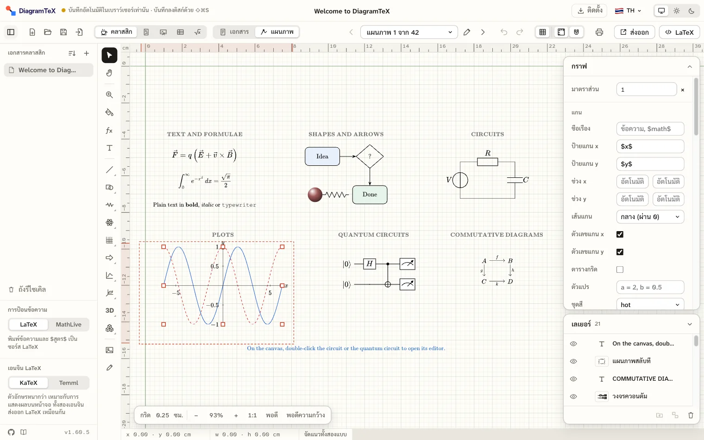
1 2 3 4 5 6- 1แถบด้านบน: ไฟล์ โหมด เลิกทำ กริดและการจัดแนว พิมพ์ ส่งออก LaTeX
- 2รายการไฟล์: คลิกขวาที่ไฟล์เพื่อเปลี่ยนชื่อ ทำสำเนา หรือลบ
- 3แถบเครื่องมือ: สามเหลี่ยมตรงมุมหมายถึงมีเครื่องมือเพิ่มเมื่อวางเมาส์
- 4คุณสมบัติ: การตั้งค่าของสิ่งที่เลือก ถ้าไม่ได้เลือก คือรูปแบบของรูปร่างใหม่
- 5เลเยอร์: คลิกเพื่อเลือก ลากเพื่อจัดลำดับ รูปตาซ่อน รูปกุญแจล็อก
- 6แถบมุมมอง: ระยะกริดและการซูม 1:1 พอดี พอดีความกว้าง
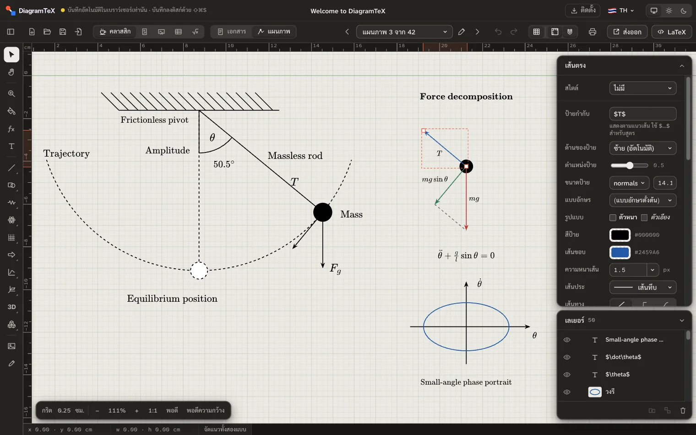

โหมดทั้งห้า
เลือกโหมดที่แถบด้านบน คลาสสิก หน้ากระดาษ และไวท์บอร์ดเป็นไฟล์คนละประเภท ปุ่ม ใหม่ สร้างไฟล์ประเภทที่อยู่
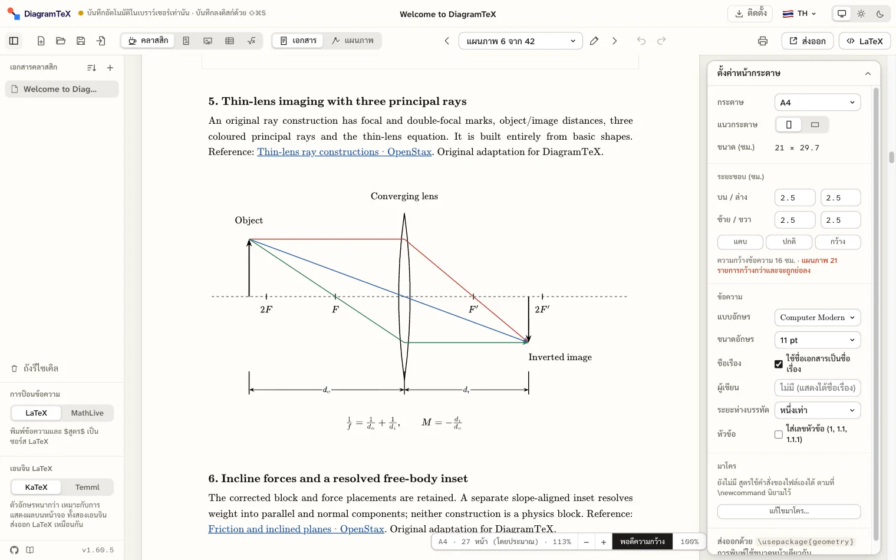
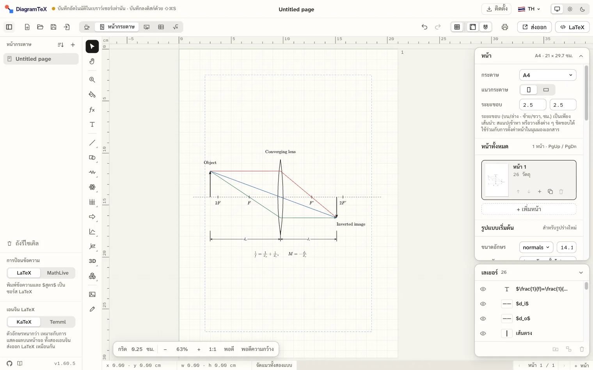
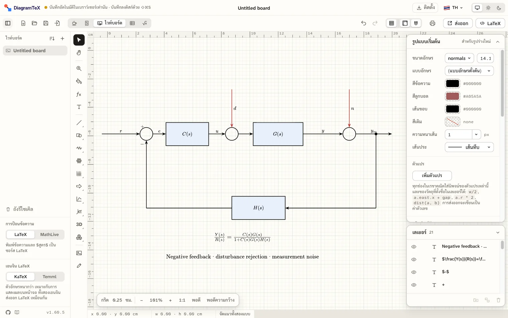
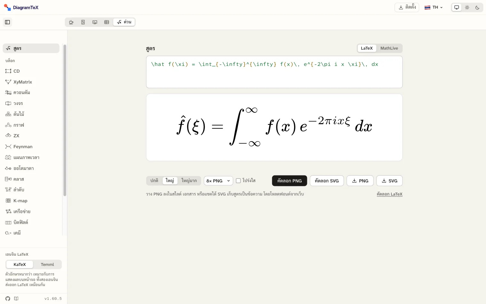
โหมดด่วน
- คัดลอกสูตรเป็นรูป: พิมพ์ LaTeX เลือกขนาด แล้วคลิก คัดลอก PNG (CtrlEnter) หรือ คัดลอก SVG แล้ววางในสไลด์หรือแชต
- วาดบล็อกโดยไม่ต้องมีไฟล์: เลือกบล็อกใต้ สูตร กด ใหม่ แล้ววาด ใช้ คัดลอก TikZ หรือ ส่งออก ที่มุมขวาบน
- ใส่ลงในไฟล์: เพิ่มลงในเอกสาร (หรือแผนภาพ หน้ากระดาษ ไวท์บอร์ด)
- ตั้งชื่อฉบับร่าง: ดับเบิลคลิกหรือกด F2 ฉบับร่างที่มีชื่อจะถูกเก็บไว้ บล็อกละไม่เกิน 24 ฉบับ
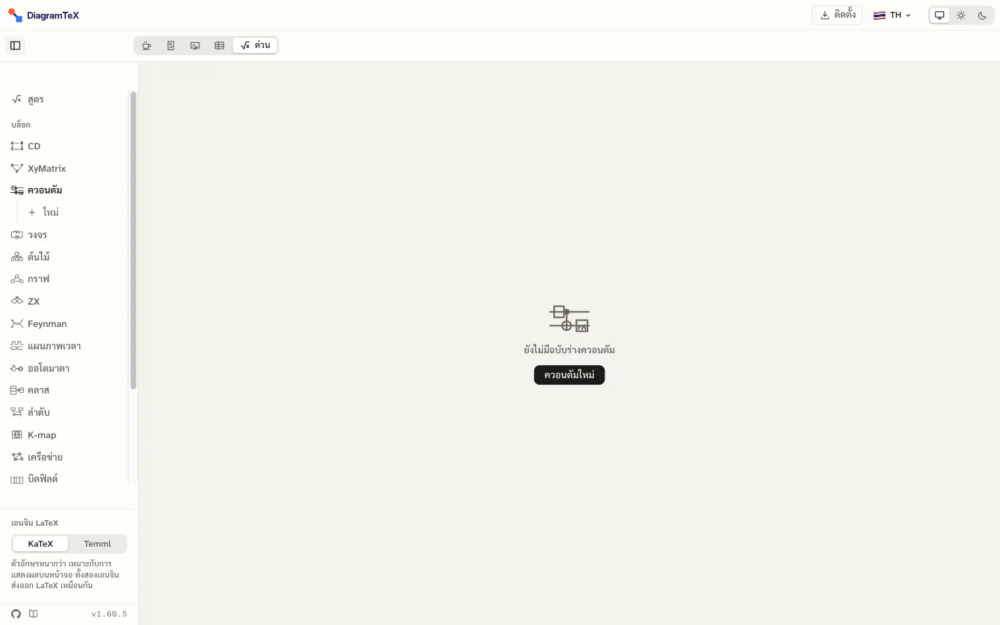
การวาด
เครื่องมือ
- วาดเส้นหรือลูกศร: กด L หรือ A แล้วลาก หรือคลิกจุดเริ่มและจุดปลาย
- เชื่อมสองรูปร่าง: ใช้เส้นเชื่อมมุมฉากหรือเส้นเชื่อมโค้งในเมนูเส้น ปลายจะติดกับรูปร่าง ลากจุดจับกลางเพื่อย้ายข้อพับ
- วาดเส้นโค้งเรียบ: ใช้ปากกาความโค้ง คลิกจุดต่าง ๆ ดับเบิลคลิกเพื่อทำมุม กด Enter เพื่อจบ คลิกจุดแรกเพื่อปิด
- วาดส่วนโค้ง: กด O คลิกศูนย์กลาง จุดเริ่ม แล้วจุดปลาย Shift จัดทีละ 15°
- วาดสี่เหลี่ยมหรือวงรี: กด R หรือ E แล้วลาก คลิกขวาที่ปุ่มเพื่อวาดจากศูนย์กลาง ด้วยสามจุด หรือเป็นวงกลม
- ใส่ข้อความหรือสูตร: T ข้อความ (ลากเพื่อทำย่อหน้า) M สูตร
- ใส่รูปภาพ: กด I หรือวางหรือลากรูปเข้ามา
- วาดอิสระ: กด N เส้นจะถูกปรับให้เรียบ
- แก้จุดของเส้นหลายท่อน: ลาก + เพื่อเพิ่มจุด ดับเบิลคลิกจุดเพื่อลบ
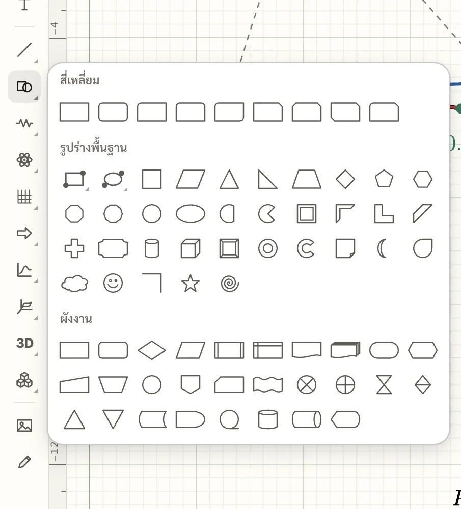
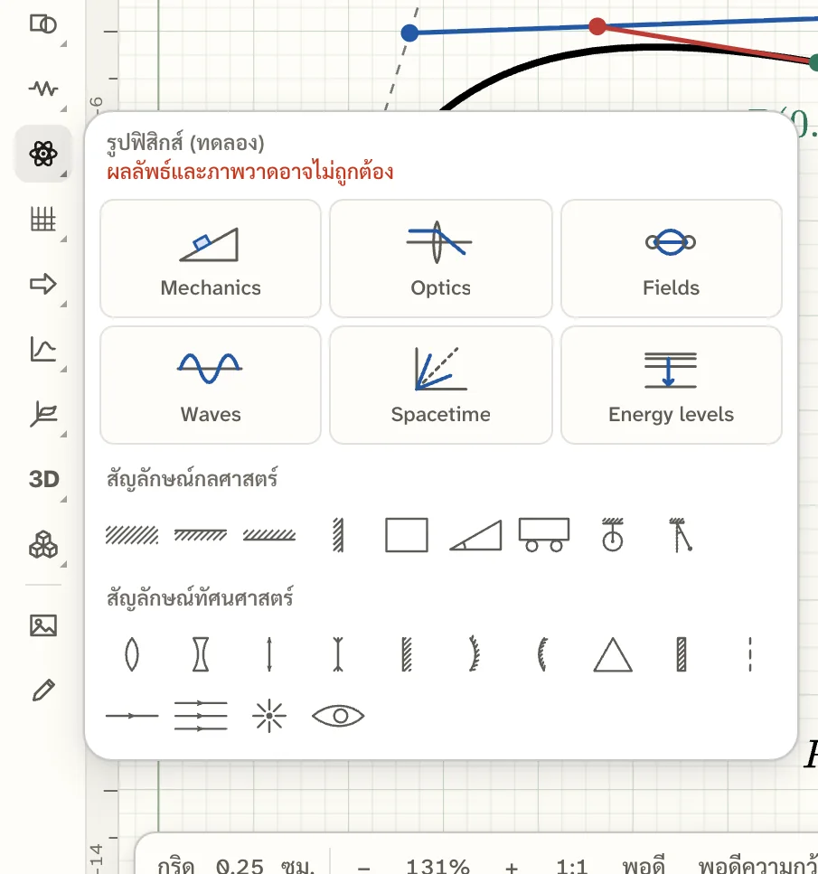
รูปฟิสิกส์
- เพิ่มรูป: เปิดเมนูฟิสิกส์ เลือกสาขา (กลศาสตร์ ทัศนศาสตร์ สนาม คลื่น กาลอวกาศ ระดับพลังงาน) แล้วคลิกพื้นที่วาด
- แก้ไข: ดับเบิลคลิกหรือกด Enter
- วางวัตถุ: เลือกทางซ้ายแล้วคลิกกริด กด Esc เมื่อเสร็จ
- ปรับ: ลากสี่เหลี่ยมเพื่อย้าย วงกลมเพื่อหมุน ข้าวหลามตัดเพื่อปรับขนาดหรือความยาวโฟกัส รังสี แรง และภาพจะเปลี่ยนตาม
- ดูผลการคำนวณ: คลิกที่ว่าง แผงขวาแสดงค่าที่คำนวณได้ทั้งหมด
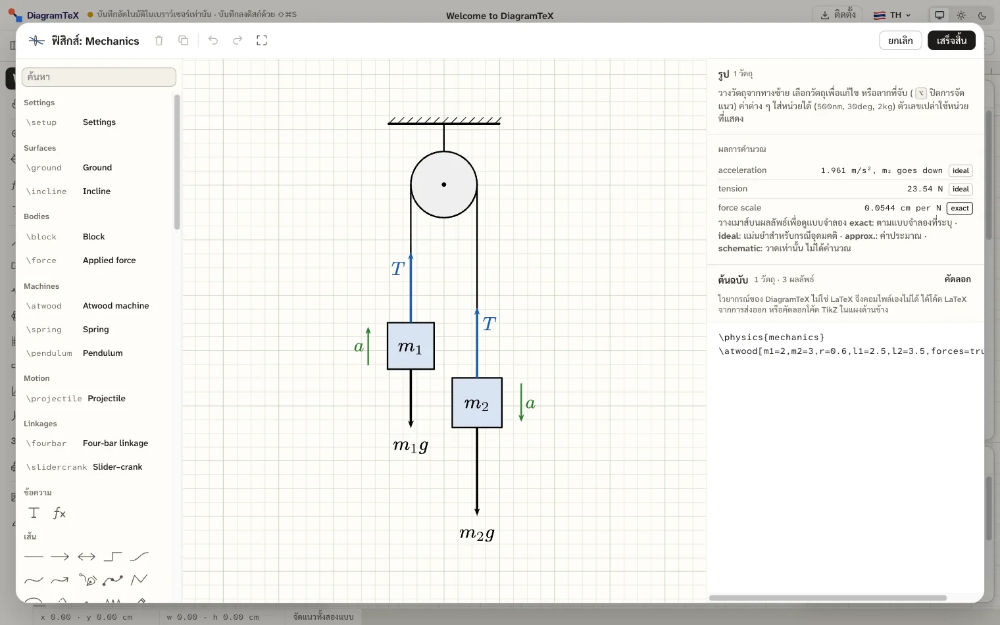
วางให้ตรงตำแหน่ง
- วางนอกกริด: กด Alt ค้างขณะลาก
- จำกัดมุมทีละ 15° หรือวาดจัตุรัสและวงกลม: กด Shift ค้าง
- พิมพ์ตำแหน่ง: เลือกวัตถุแล้วพิมพ์พิกัด TikZ เป็นเซนติเมตรในแผง
- ขยับทีละน้อย: ปุ่มลูกศร
- หมุน: วางเมาส์นอกกึ่งกลางขอบจนเคอร์เซอร์เปลี่ยน แล้วลาก CtrlR หมุน 90°
- เปลี่ยนกริด: เมนูข้างปุ่มจัดแนว: เส้น จุด ไอโซเมตริก หรือเฉียง ตั้งระยะในแถบมุมมอง
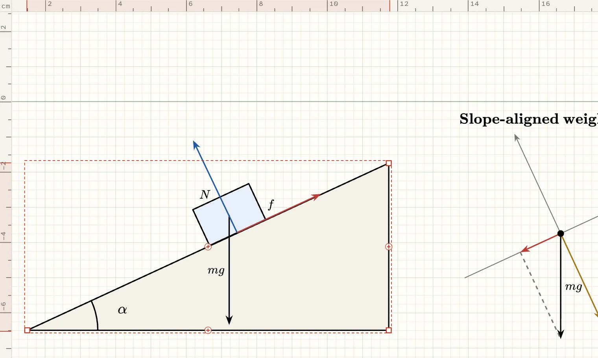
การจัดวาง
- เปิดเมนูของวัตถุ: คลิกขวา (หรือแตะค้าง)
- จัดกลุ่ม: CtrlG และ CtrlShiftG เพื่อยกเลิก คลิกสมาชิกอีกครั้งเพื่อเลือกเฉพาะชิ้นนั้น
- ปรับขนาดหลายชิ้นพร้อมกัน: เลือกแล้วลากจุดจับของกรอบเส้นประ
- จัดแนวหรือกระจาย: คลิกขวา จัดแนว หรือ กระจาย หรือใช้ปุ่มในแผง
- ตัดรูปหนึ่งออกจากอีกรูป: เลือกทั้งสอง คลิกขวา รวมรูปร่าง → ตัดออก
- นำไปหน้าหรือหลัง: Ctrl] / Ctrl[ หรือลากในเลเยอร์
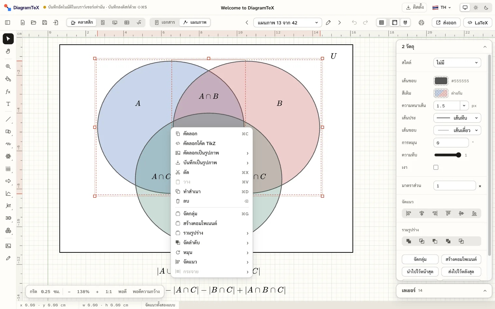
รูปแบบ
- สี สีเติม และเส้น: เลือกวัตถุแล้วใช้แผง สีเติมเป็นสี การไล่สี หรือลวดลายได้
- หัวลูกศรและเส้นประ: เลือกจาก หัวลูกศร และ เส้นประ ในแผง
- ใส่เงา: เปิด เงา แล้วตั้งระยะและความเข้ม
- ตั้งรูปแบบของรูปร่างใหม่: คลิกที่ว่างแล้วปรับแผง
- ใช้รูปแบบซ้ำ: เลือกวัตถุ แล้ว สร้างสไตล์จากที่เลือก… ในแถวสไตล์ ตั้งชื่อ แล้วเลือกสไตล์นั้นให้วัตถุอื่น
- สร้างคำสั่งของคุณเอง: CtrlK แล้ว มาโคร… เขียน
\newcommand{\R}{\mathbb{R}}ทุกสูตรและการส่งออกในไฟล์จะใช้ได้
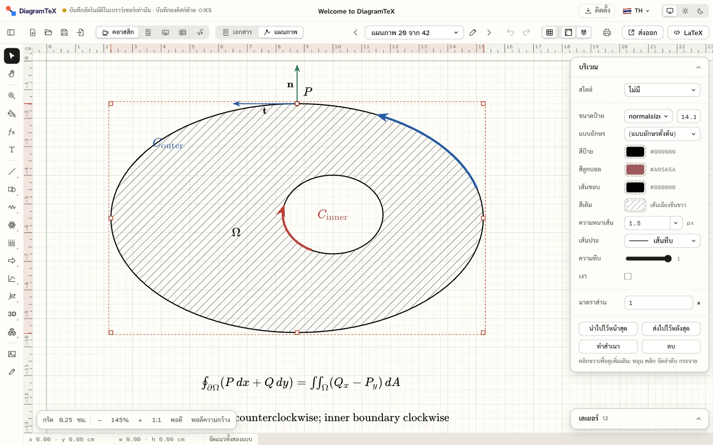
ข้อความและสูตร
- เขียนสูตร: ใส่ระหว่าง
$…$ถ้าต้องการขนาดเต็มใช้$$…$$ - แก้ข้อความ: ดับเบิลคลิก Enter ขึ้นบรรทัดใหม่ CtrlEnter หรือ Esc เพื่อจบ ยกเลิก คืนค่าเดิม
- ตัวหนาหรือตัวเอียง: CtrlB / CtrlI หรือปุ่ม B และ I ในตัวแก้ไข
- สมการหลายบรรทัด กรณี หรือเมทริกซ์: ใช้ สภาพแวดล้อม ในตัวแก้ไข หรือพิมพ์
\begin{align*}…หลายบรรทัด - หาคำสั่ง: พิมพ์
\แล้วเลือกจากรายการ (↑ ↓ Enter) - แก้สูตรแบบเห็นภาพ: การป้อนข้อความ → MathLive ในแถบซ้าย
- ใช้หน่วยหรือเคมี:
\SI{9.8}{\metre\per\second\squared}และ\ce{2H2 + O2 -> 2H2O}การส่งออกโหลดแพ็กเกจให้
กราฟและรูปสามมิติ
กราฟ 2 มิติ (pgfplots)
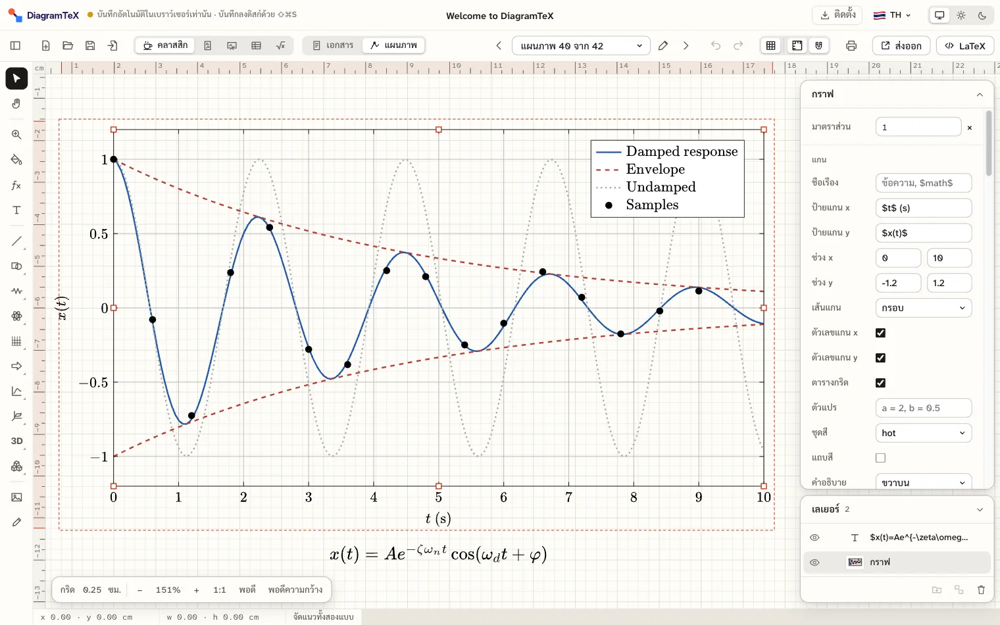
- เพิ่มกราฟ: ปุ่ม กราฟ 2 มิติ ในแถบเครื่องมือ แล้วคลิกพื้นที่วาด (หรือลากกรอบ)
- พล็อตฟังก์ชัน: พิมพ์นิพจน์ เช่น
sin(x)*exp(-x/4)ในชุดข้อมูล - เพิ่มชุดข้อมูล: + เพิ่มชุดข้อมูล ในแผง แล้วเลือกฟังก์ชัน เส้น กระจาย พื้นที่ แท่ง เส้นชั้น แผนที่ความร้อน หรือวงกลม
- ใช้พารามิเตอร์: พิมพ์
a = 2, b = 0.5ใน ตัวแปร แล้วใช้aในชุดข้อมูลใดก็ได้ - ตั้งแกนและคำอธิบาย: ป้ายแกน ช่วง กริด และคำอธิบายอยู่ในแผง
สามมิติ
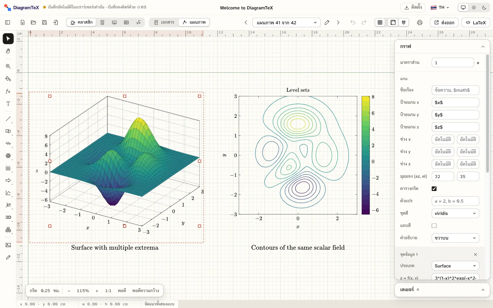
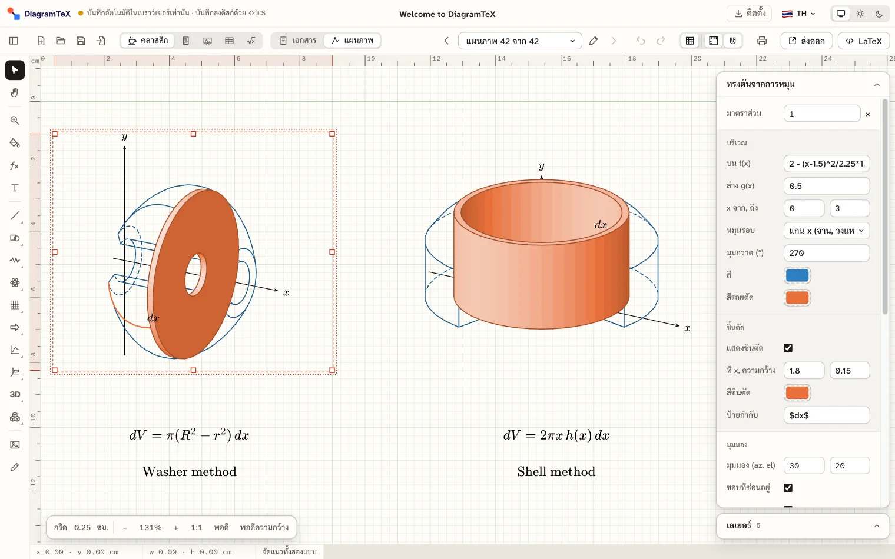
- พล็อตพื้นผิว: กราฟ 3 มิติ ในแถบเครื่องมือ → พื้นผิว แล้วพิมพ์
z = f(x, y)ตั้งมุมมองในแผง - วาดทรงตันจากการหมุน: รูปสามมิติ → ทรงตันจากการหมุน ตั้งเส้นโค้ง แกน และมุมกวาดในแผง
- วาดทรงพื้นฐาน: รูปสามมิติ → ทรงพื้นฐาน แล้วเลือกกรวย ทรงกลม ปริซึม… จากรูป
- วาดจุดและเวกเตอร์ 3 มิติ: เรขาคณิต 3 มิติ ในเมนูบล็อก (ดู บล็อก)
บล็อก
บล็อกคือรูปที่เขียนด้วยแพ็กเกจ LaTeX เฉพาะ (วงจร วงจรควอนตัม ต้นไม้ เคมี…) และวาดในตัวแก้ไขของตัวเอง บล็อกยังอยู่ระหว่างทดลอง ควรตรวจรูปที่คอมไพล์แล้ว
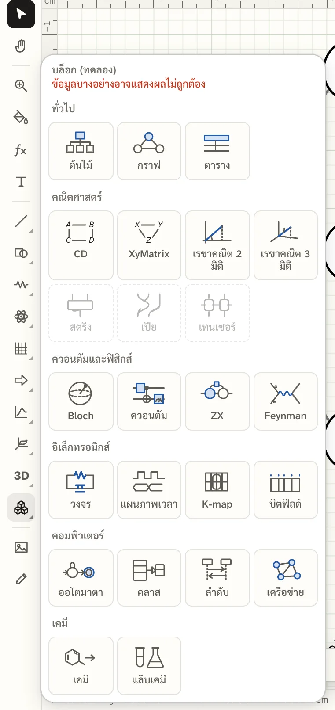
- เพิ่ม: คลิกรูปลูกบาศก์ในแถบเครื่องมือ เลือกบล็อก แล้วคลิกพื้นที่วาด
- เปิดตัวแก้ไข: ดับเบิลคลิก หรือกด Enter
- วาด: คลิกรายการทางซ้าย แล้วคลิกกริด คลิกขวาที่รายการเพื่อดูคำสั่ง
- แก้โค้ดได้ถ้าต้องการ: โค้ดทางขวาเปลี่ยนตามรูป และรูปเปลี่ยนตามโค้ด
- จบ: เสร็จสิ้น (CtrlEnter) CtrlS บันทึกโดยยังเปิดไว้ Esc ยกเลิก
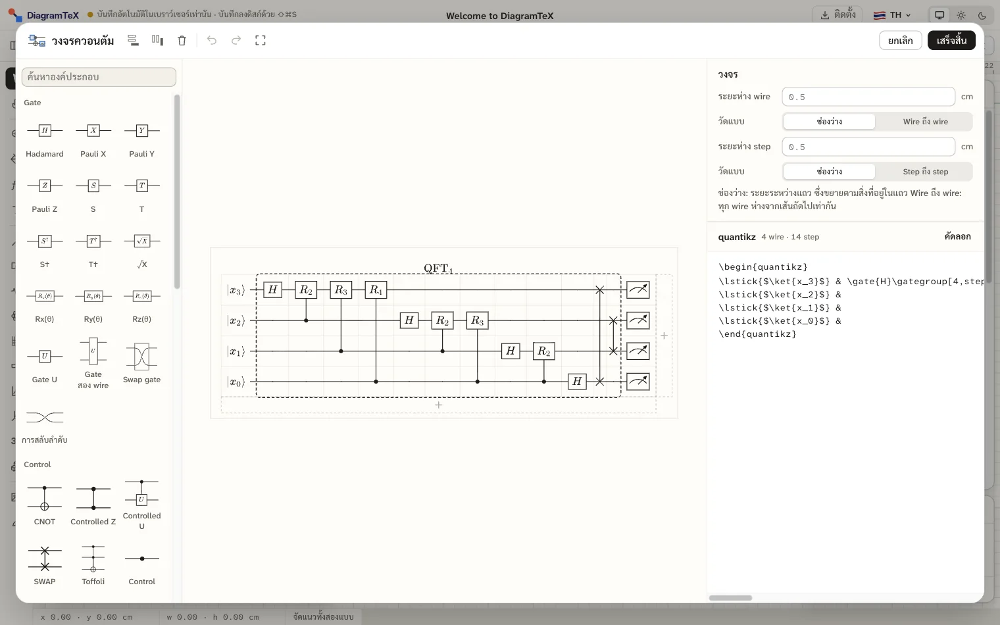
เปิดบล็อกด้านล่างเพื่อดูวิธีใช้ตัวแก้ไขแต่ละตัว
วงจรไฟฟ้า circuitikz415 ชิ้นส่วน
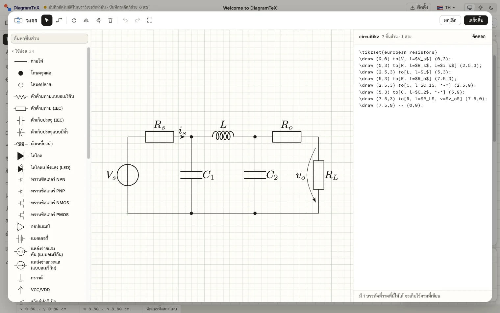
- วางชิ้นส่วน: ค้นหาในรายการ คลิกชิ้นส่วน แล้วคลิกกริด ลากจากต้นถึงปลายเพื่อกำหนดความยาวของชิ้นส่วนสองขั้ว
- ต่อสาย: กด W แล้วคลิกจากขาไปขา สายจะติดไปกับชิ้นส่วนเมื่อย้าย
- ใส่ป้าย: เลือกชิ้นส่วนแล้วพิมพ์ในแผง (
$R_1$) ลูกศรแรงดันและกระแส ปลายสาย การหมุน และการกลับด้านอยู่ในแผงเช่นกัน - เลือกสายทั้งเส้น: ดับเบิลคลิกสาย คลิกครั้งเดียวจะเลือกทีละช่วง
ตัวอย่างพร้อมโค้ดให้คัดลอก: circuitikz editor (ภาษาอังกฤษ)
วงจรควอนตัม quantikz
- วางประตู: คลิกช่องแล้วพิมพ์ H X Y Z S T U หรือ C ตัวควบคุม O ตัวควบคุมเปิด + เป้าหมาย M มิเตอร์ เคอร์เซอร์จะเลื่อนไปทางขวา
- เพิ่มสายหรือขั้น: วางประตูบนแถวหรือคอลัมน์เส้นประ หรือคลิกขวาที่ช่อง
- เชื่อมตัวควบคุม: ลากจุดจับสีน้ำเงินไปยังสายอื่น
- ให้ประตูคลุมหลายสาย: ลากแถบบนหรือล่างของประตู
- จัดกลุ่มประตู: ลากคลุมหลายช่อง คลิกขวา แล้วเลือก จัดกลุ่มรายการที่เลือก
ตัวอย่างพร้อมโค้ดให้คัดลอก: quantikz editor (ภาษาอังกฤษ)
แผนภาพสลับที่ tikz-cd
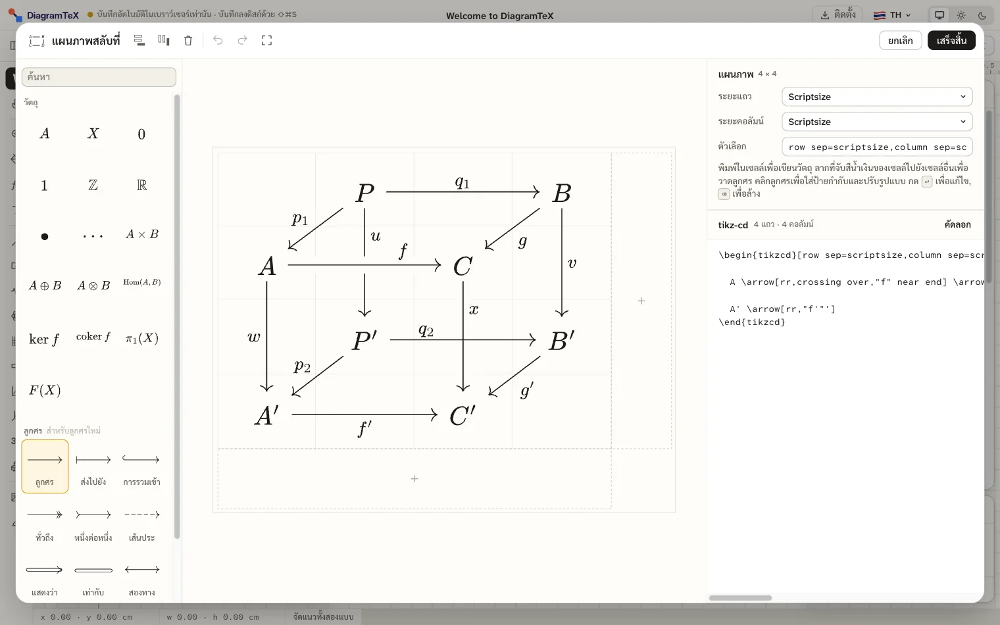
- เพิ่มวัตถุ: เลือกช่องแล้วพิมพ์ หรือลากจากแถบซ้าย
- วาดลูกศร: เลือกแบบลูกศรในแถบซ้าย แล้วลากจากช่องไปช่อง
- ใส่ป้ายหรือดัดโค้ง: เลือกลูกศรแล้วใช้แผง เพิ่มป้ายกำกับ ใส่ป้ายที่สอง กลับทิศ สลับปลาย
ตัวอย่างพร้อมโค้ดให้คัดลอก: tikz-cd editor (ภาษาอังกฤษ)
แผนภาพสลับที่ xymatrix
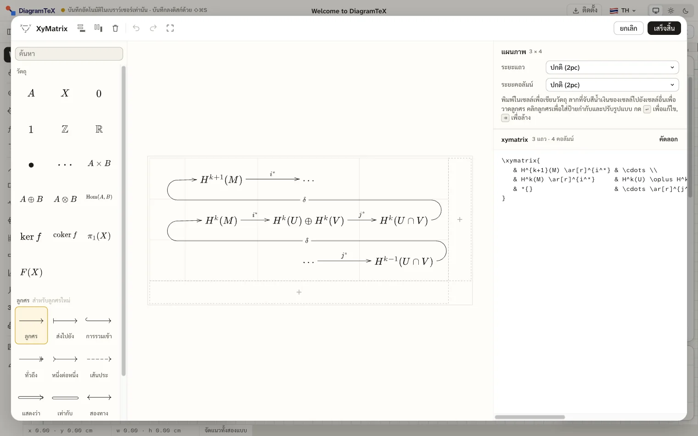
- วาด: เหมือนตัวแก้ไข tikz-cd โค้ดเขียนเป็น
\xymatrix{…} - เปลี่ยนแพ็กเกจ: แปลงเป็น tikz-cd ในแผง (และ แปลงเป็น xymatrix ในบล็อก CD)
ต้นไม้ forest
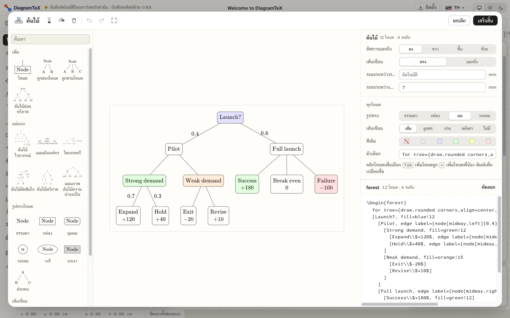
- เริ่ม: เลือกแม่แบบ (ต้นไม้ไวยากรณ์ ผังองค์กร ไดเรกทอรี ต้นไม้ตัดสินใจ)
- เพิ่มโหนด: เลือกโหนดแล้วเพิ่มลูกหรือพี่น้องจากแถบซ้าย หรือลากเข้ามา
- เปลี่ยนทิศ: ใช้ปุ่มทิศของต้นไม้ในแผง
- ซ่อนโหนดแต่คงตำแหน่ง: คลิกขวา แล้วเลือก ทำให้ล่องหน
กราฟ TikZ graphs
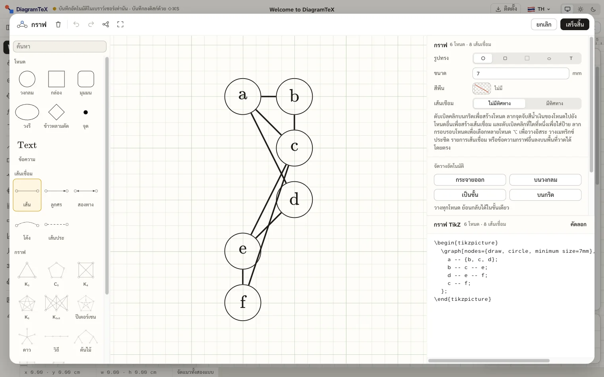
- เพิ่มโหนด: ดับเบิลคลิกกริด หรือลากจากแถบซ้าย
- เพิ่มเส้นเชื่อม: ลากจุดจับสีน้ำเงินของโหนดไปยังอีกโหนด (ลากกลับมาที่ตัวเองเพื่อทำวง)
- วางกราฟจากข้อความ: วางเมทริกซ์ประชิด รายการเส้นเชื่อม DOT, Mermaid หรือ JSON หรือเริ่มจาก K₅ ปีเตอร์เซน ต้นไม้ หรือกริด
- จัดให้เรียบร้อย: กระจายออก เป็นวงกลม เป็นชั้น หรือ บนกริด ในแผง
แผนภาพ ZX zx-calculus
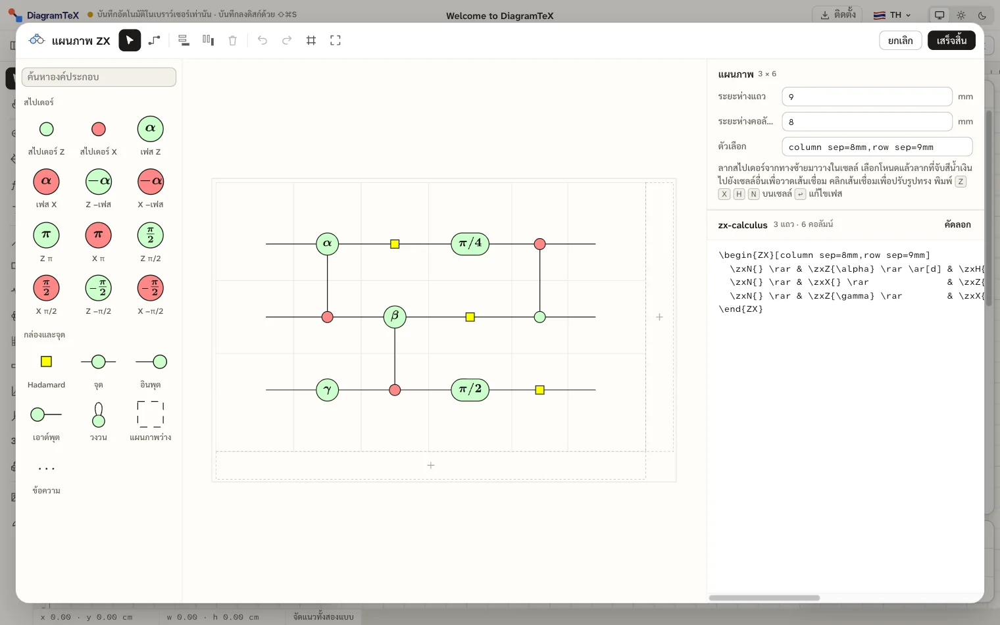
- วางสไปเดอร์: คลิกช่องแล้วพิมพ์ Z X H N L
- ต่อสาย: ลากจุดจับสีน้ำเงินของโหนดไปยังอีกช่อง
- ใส่เฟส: เลือกสไปเดอร์แล้วพิมพ์เฟสในแผง
- เปลี่ยนรูปสาย: คลิกสายแล้วเลือกจากรูป
แผนภาพไฟน์แมน tikz-feynman
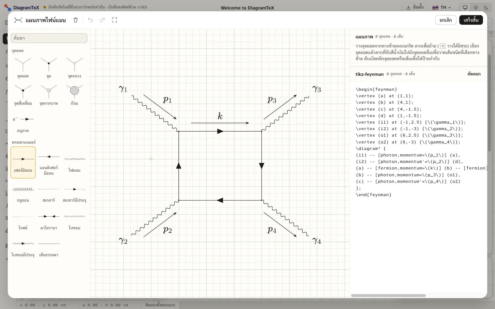
- วางจุดยอด: คลิกจุดยอดในแถบซ้าย แล้วคลิกกริด
- วาดตัวแพร่: ลากจุดจับสีน้ำเงินจากจุดยอดหนึ่งไปอีกจุด แป้นเลือกชนิด: F เฟอร์มิออน P โฟตอน G กลูออน S สเกลาร์ M มาโยรานา B โบซอน
- ใส่ป้าย ดัดโค้ง หรือใส่โมเมนตัม: เลือกเส้นแล้วใช้แผง คลิกขวาเพื่อกลับทิศ
ตัวอย่างพร้อมโค้ดให้คัดลอก: tikz-feynman editor (ภาษาอังกฤษ)
เรขาคณิต 2 มิติ TikZ
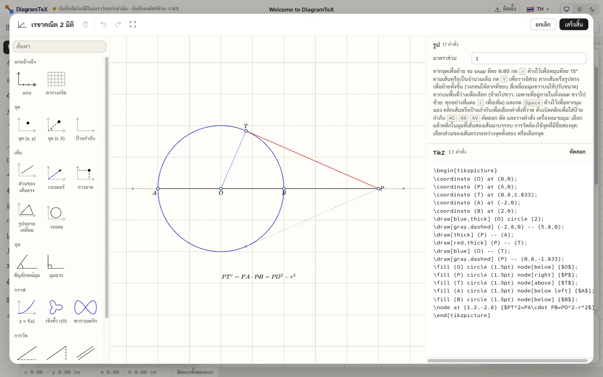
- เพิ่มจุด เส้น และรูป: เลือกจากแถบซ้าย (แป้น A แกน G กริด P จุด S ส่วนของเส้นตรง V เวกเตอร์) แล้วคลิก
- ย้ายจุด: ลากจุด Alt วางนอกกริด Shift จัดไปที่จำนวนเต็มหรือมุม 15°
- ทำเครื่องหมายมุม: เลือกเครื่องหมายมุม แล้วคลิกในมุม
- แสดงความยาวหรือมุม: เลือกส่วนของเส้นตรง แล้วเลือกการวัด ค่าจะเปลี่ยนตามเมื่อย้ายจุด
เรขาคณิต 3 มิติ tikz-3dplot
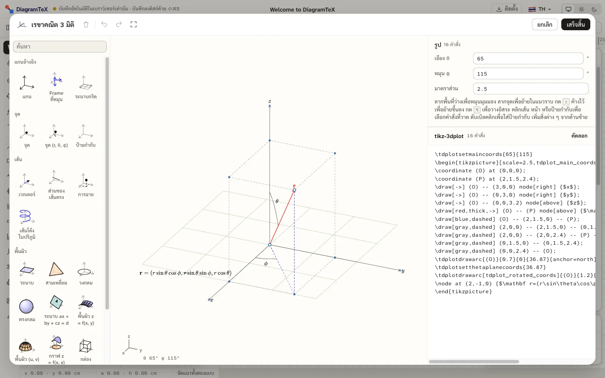
- หมุนมุมมอง: ลากพื้นที่ว่าง หรือใช้ปุ่มลูกศร (5° กด Shift 15°)
- เพิ่มวัตถุ: แกน จุด เวกเตอร์ ระนาบ ทรงกลม กล่อง เส้นโค้ง (แป้น A P V S B…)
- ย้ายจุด: ลากเพื่อย้ายในแนวราบ กด Shift ค้างเพื่อย้ายขึ้นลง
แผนภาพเวลา tikz-timing
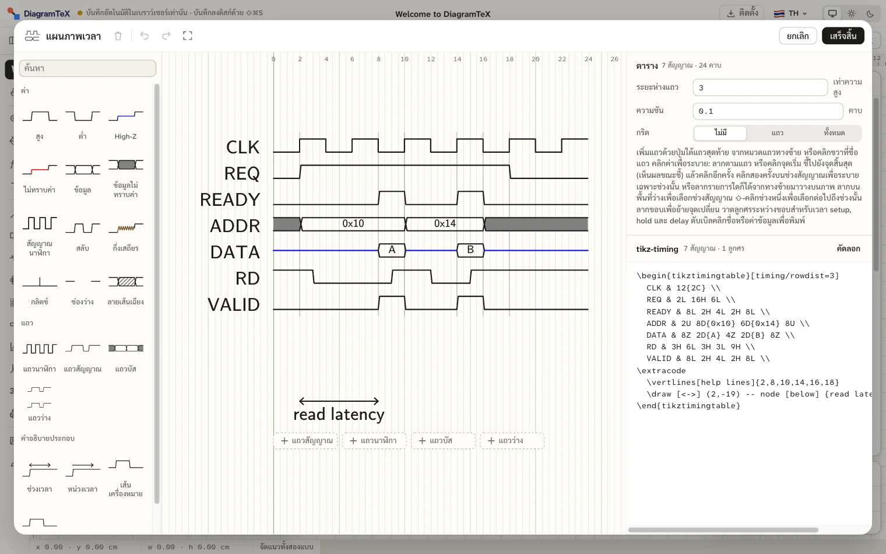
- ระบายสัญญาณ: เลือกค่า (H สูง L ต่ำ Z high-Z D ข้อมูล C นาฬิกา…) แล้วลากตามแถว
- ย้ายจุดเปลี่ยน: ลากขอบ กด Shift เพื่อให้ส่วนที่เหลือของแถวเลื่อนตาม
- ระบุเวลา setup หรือ hold: ลาก ช่วงเวลา หรือ หน่วงเวลา ระหว่างสองขอบ
- เปลี่ยนหลายช่วงพร้อมกัน: ลากคลุม หรือกด CtrlA แล้วเลือกค่า
ตัวอย่างพร้อมโค้ดให้คัดลอก: tikz-timing editor (ภาษาอังกฤษ)
เครื่องสถานะ automata
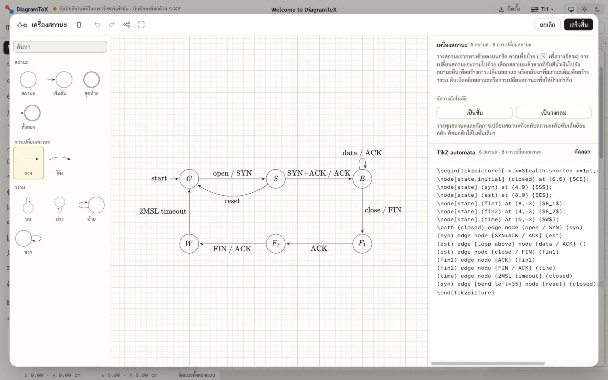
- เพิ่มสถานะ: เลือก State, Initial, Final หรือ Both แล้วคลิกกริด
- เพิ่มการเปลี่ยนสถานะ: ลากจุดจับสีน้ำเงินไปยังอีกสถานะ (กลับมาที่ตัวเองเพื่อทำวง)
- สลับสถานะเริ่มต้นหรือยอมรับ: เลือกสถานะแล้วกด I หรือ A
- จัดให้เรียบร้อย: จัดวางอัตโนมัติ เป็นชั้นหรือเป็นวงกลม
เครือข่าย tikz-network
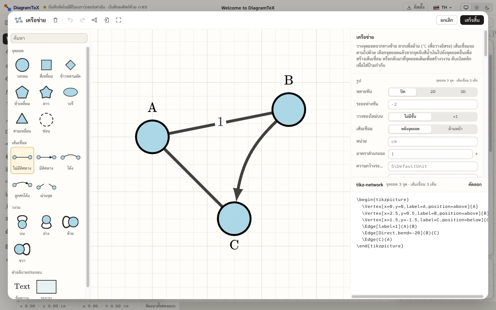
- เพิ่มจุดยอด: เลือกรูปร่างแล้วคลิกกริด
- เพิ่มเส้นเชื่อม: เลือกชนิดเส้น แล้วลากจุดจับสีน้ำเงินไปยังอีกจุดยอด
- แก้หลายรายการ: Shift-คลิก หรือลากกรอบคลุม แผงจะตั้งค่าให้ทั้งหมด
- ทำงานหลายชั้น: เมื่อไม่ได้เลือกอะไร เปิด หลายชั้น แล้วเลือกชั้นที่มุมล่างซ้าย
- โหลดข้อมูล: เพิ่มไฟล์ CSV… อ่านจุดยอดหรือเส้นเชื่อมจากไฟล์ CSV
แผนภาพคลาส UML pgf-umlcd
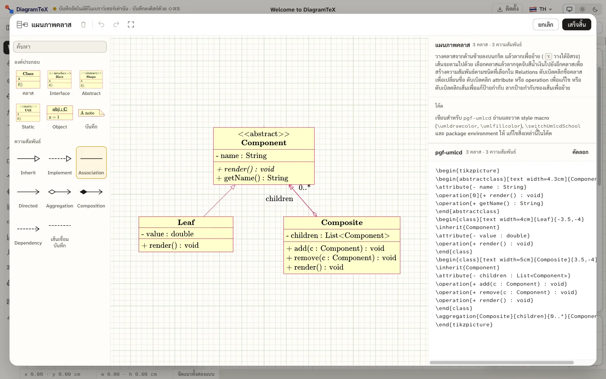
- เพิ่มคลาส: คลิกกริด หรือลากปุ่มของกล่องไปที่ว่างเพื่อสร้างคลาสที่เชื่อมกัน
- เปลี่ยนชื่อหรือเพิ่มสมาชิก: ดับเบิลคลิกชื่อ แอตทริบิวต์ หรือเมธอด
- เชื่อมสองคลาส: เลือกความสัมพันธ์ในแถบซ้าย แล้วลากจากปุ่มของกล่องหนึ่งไปอีกกล่อง
แผนภาพลำดับ UML pgf-umlsd
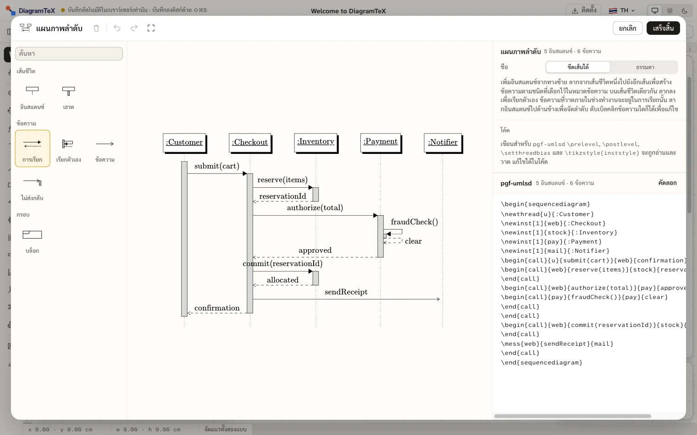
- เพิ่มเส้นชีวิต: I อินสแตนซ์ หรือ T เธรด ลากไปด้านข้างเพื่อเรียงใหม่
- เพิ่มข้อความ: เลือก C เรียก S เรียกตัวเอง หรือ M ข้อความ แล้วลากจากเส้นชีวิตหนึ่งไปอีกเส้น
- ใส่กรอบ: เลือกข้อความแล้วกด B
แผนผังคาร์โนห์ karnaugh-map2–6 ตัวแปร
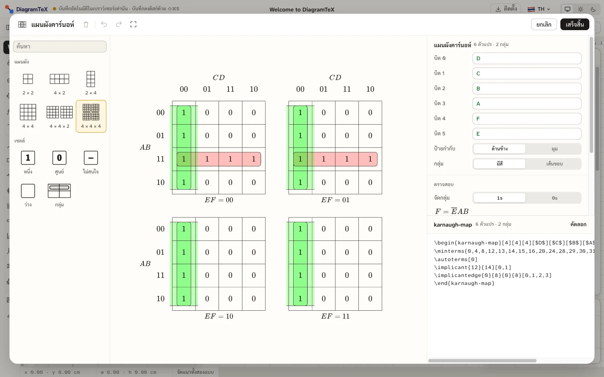
- ใส่ค่า: คลิกเพื่อสลับ 0, 1, ไม่สนใจ หรือระบายด้วย 1 0 D
- จัดกลุ่ม: ลากคลุมช่อง (กลุ่มวนข้ามขอบได้) หากลุ่ม หาการคลุมที่เล็กที่สุดให้
ตัวอย่างพร้อมโค้ดให้คัดลอก: Karnaugh maps in LaTeX (ภาษาอังกฤษ)
บิตฟิลด์ bytefieldโครงสร้างแพ็กเก็ตและรีจิสเตอร์
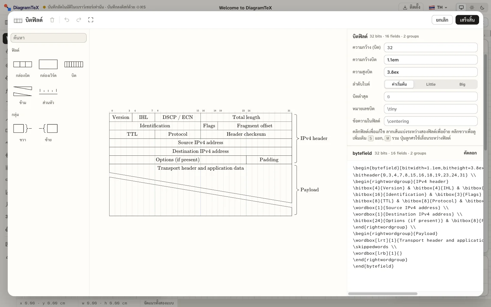
- ปรับขนาดฟิลด์: ลากขอบขวา (จัดตามบิต)
- แยกหรือรวม: S แยก M รวมกับฟิลด์ถัดไป
- ใส่ป้าย: ดับเบิลคลิกหรือกด Enter
- ใส่วงเล็บปีกกา: เลือกฟิลด์ แล้วกด R หรือ L
เคมี chemfig
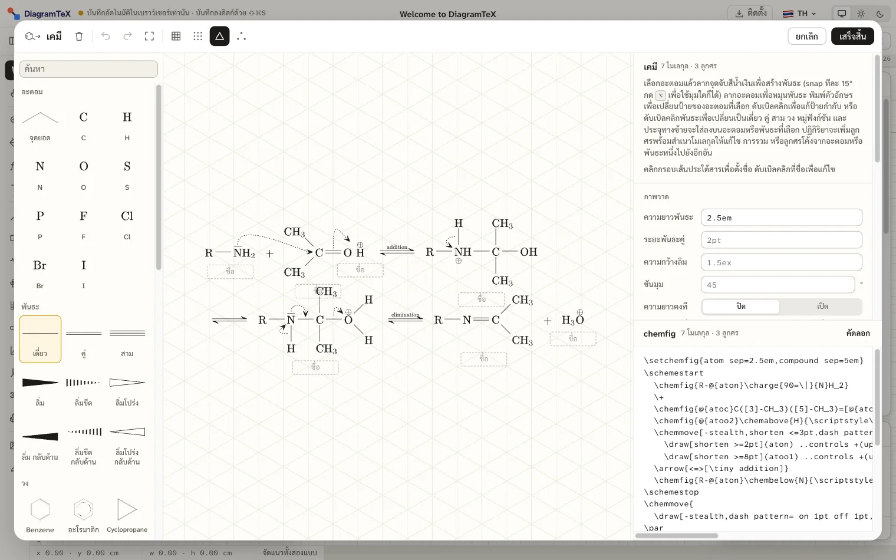
- ต่อโมเลกุล: ลากจุดจับสีน้ำเงินของอะตอมเพื่อเพิ่มพันธะ พิมพ์ C H N O เพื่อเปลี่ยนอะตอม หรือดับเบิลคลิกเพื่อพิมพ์ป้ายใดก็ได้
- เปลี่ยนพันธะ: ดับเบิลคลิกพันธะ: เดี่ยว คู่ สาม
- เพิ่มวงหรือหมู่: ลากจากแถบซ้ายไปวางบนอะตอมหรือพันธะ
- เขียนปฏิกิริยา: เพิ่มลูกศร แล้วพิมพ์หรือวางสารถัดไปในกรอบเส้นประ
- ตั้งชื่อสาร: คลิกกรอบเส้นประใต้สาร
ตัวอย่างพร้อมโค้ดให้คัดลอก: chemfig editor (ภาษาอังกฤษ)
แล็บเคมี tikz-chemlab
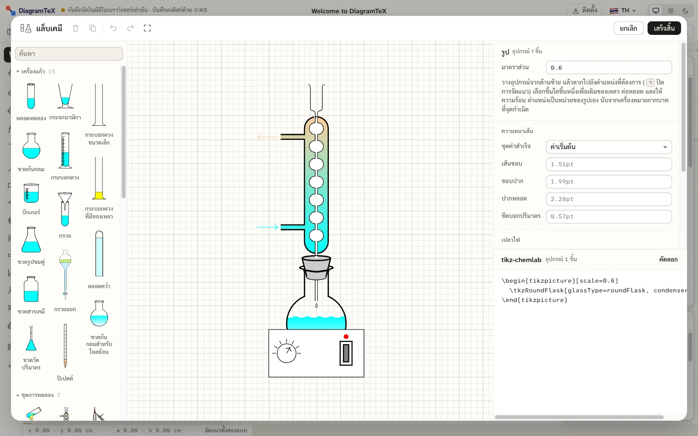
- วางเครื่องแก้ว: เลือกชิ้นหรือชุดอุปกรณ์ทั้งชุด แล้วคลิกกริด
- เอียงภาชนะ: ลากจุดจับกลมด้านบน
- ใส่ของเหลว จุก หรือที่จับ: เลือกชิ้นแล้วใช้แผง
ทรงกลมบล็อค blochsphere
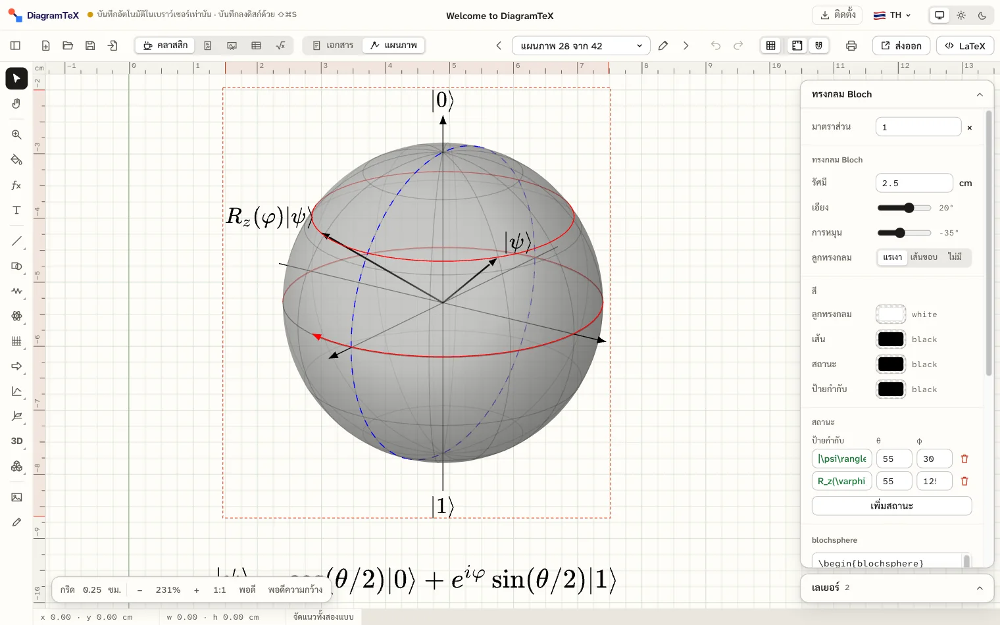
- ตั้งค่า: เลือกแล้วกำหนดรัศมี ความเอียง การหมุน และสีในแผง
- เพิ่มสถานะ: เพิ่มสถานะ แล้วใส่ป้าย θ และ φ
ตาราง
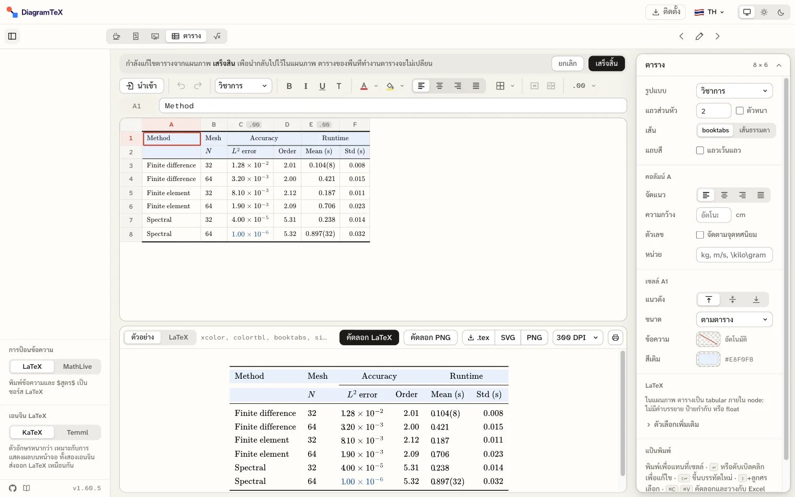
- นำตารางเข้า: เลือก ตาราง ที่แถบโหมด แล้ววางเซลล์จาก Excel, Sheets หรือ Numbers (CtrlV) หรือลากไฟล์ CSV, Excel, Markdown, HTML หรือ LaTeX มาวาง
- แก้เซลล์: พิมพ์ทับได้เลย Enter F2 หรือดับเบิลคลิกเพื่อแก้ ปุ่มลูกศรและ Tab ใช้ย้าย
- เพิ่ม รวม หรือย้ายแถวและคอลัมน์: คลิกขวาที่กริด
- จัดรูปแบบ: เลือกสไตล์ (Academic, Minimal, Grid, Striped, Plain) ตั้งการจัดแนว ทศนิยม และหน่วยในแผง
- นำออก: คัดลอก LaTeX (CtrlShiftC) .tex SVG PNG หรือ คัดลอก PNG
- ใส่ตารางในแผนภาพ: บล็อก → ตาราง หรือวางเซลล์จากสเปรดชีตบนพื้นที่วาด ดับเบิลคลิกเพื่อแก้
โหมดตารางเก็บตารางไว้หนึ่งตารางจนกว่าจะนำเข้าใหม่ และไม่ได้บันทึกในไฟล์ ส่วนบล็อกตารางบันทึกในไฟล์
เอกสารและหน้ากระดาษ
เอกสารคลาสสิก
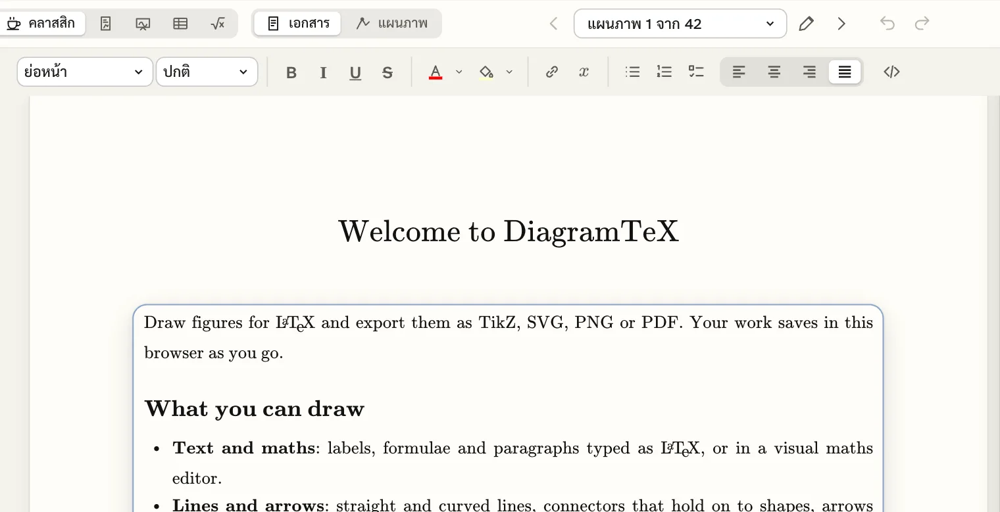
- เขียน: สลับเป็น เอกสาร แล้วคลิกหน้ากระดาษ ขึ้นต้นบรรทัดด้วย
#หัวข้อ-หัวข้อย่อย1.รายการเลขลำดับ - ใส่สูตร: พิมพ์
$x^2$ในบรรทัด หรือ$$…$$หรือ\begin{align}สำหรับสูตรแยกบรรทัด - เพิ่มหรือแก้แผนภาพ: ดับเบิลคลิกบล็อกแผนภาพ (หรือ แก้ไข) เพื่อวาด
- ตั้งกระดาษและแบบอักษร: ตั้งค่าหน้ากระดาษ ทางขวา: กระดาษ ขอบ แบบอักษร ชื่อเรื่อง ผู้แต่ง เลขหัวข้อ
- ได้ LaTeX ทั้งฉบับ: CtrlShiftE ดาวน์โหลดเอกสารทั้งฉบับเป็น
article
โหมดหน้ากระดาษ
- วางสิ่งต่าง ๆ: วาดที่ใดก็ได้บนกระดาษ ขอบและเส้นกึ่งกลางเป็นจุดจัดแนว
- เพิ่มหน้า: คลิกที่ว่าง แผงแสดงรายการหน้าเพื่อเพิ่ม เรียง ทำสำเนา หรือลบ
- ไปหน้าอื่น: PgUp / PgDn
การส่งออก LaTeX
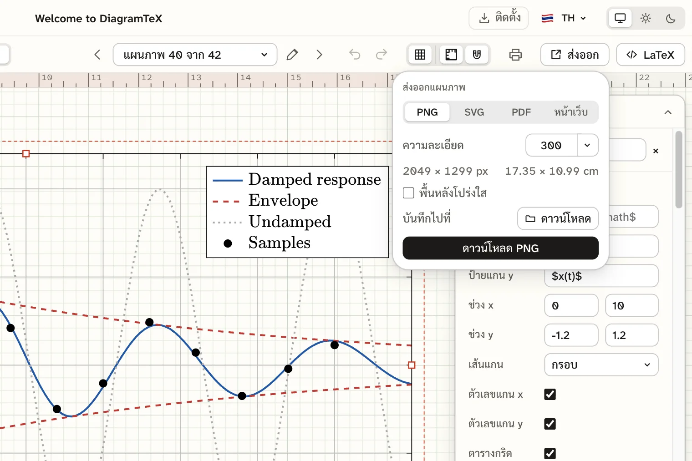
- คัดลอก TikZ: CtrlE แล้ว คัดลอก เลือกเป็นส่วนของโค้ดหรือเอกสาร
standaloneทั้งหมดหรือเฉพาะที่เลือก - คัดลอกเฉพาะบางวัตถุ: เลือก คลิกขวา แล้ว คัดลอกโค้ด TikZ
- ตรวจว่าคอมไพล์ได้: ในหน้าต่าง LaTeX คลิก คอมไพล์ (เลือก pdfLaTeX หรือ XeLaTeX) ข้อผิดพลาดจะแสดงที่บรรทัด
- บันทึกเป็นรูป: ส่งออก: PNG ทุก DPI (พื้นหลังโปร่งใสได้) SVG หรือ PDF
- พิมพ์หรือทำ PDF: CtrlP แล้วเลือกบันทึกเป็น PDF
- ได้ไฟล์สำหรับ Overleaf: ในหน้าต่าง LaTeX คลิก ดาวน์โหลด .zip (ไฟล์
.texและรูปที่ใช้) - ส่งออกไปโฟลเดอร์บทความทุกครั้ง: บันทึกไปที่ ในหน้าต่างส่งออก (Chrome, Edge) เลือกโฟลเดอร์ครั้งเดียว
บรรทัดแรกของโค้ดระบุแพ็กเกจที่ต้องโหลด เช่น
% Requires: \usepackage{tikz} \usetikzlibrary{arrows.meta}
\begin{tikzpicture}[x=1cm, y=1cm]
\draw[line width=0.71pt, -{Stealth}] (0,0) -- (3,0) node[midway, above] {$\vec v$};
\end{tikzpicture}การนำเข้า TikZ
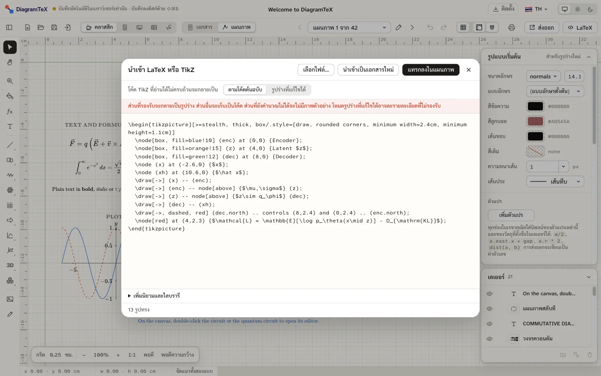
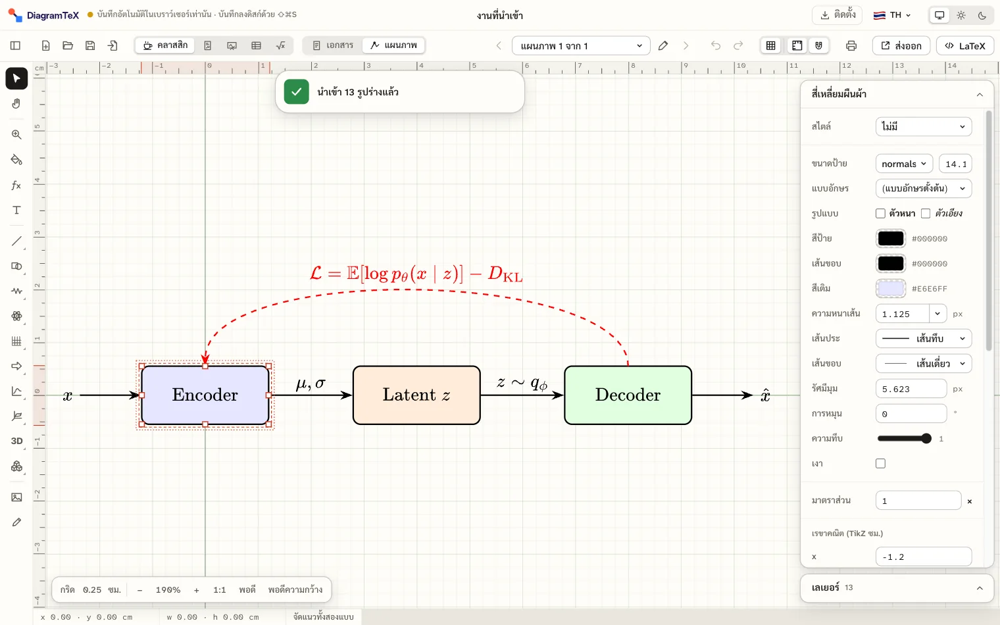
- วางอะไรก็ได้: CtrlV รูปภาพ โค้ด TikZ สูตร หรือบล็อก (
quantikz,\chemfig{…}…) จะวางกลางมุมมอง - นำเข้าไฟล์ .tex: นำเข้า ที่แถบด้านบน (หรือลากไฟล์มาวาง) แล้วเลือก แทรกลงในแผนภาพ หรือ นำเข้าเป็นเอกสารใหม่
- เลือกวิธีนำเข้าโค้ดที่อ่านไม่ได้: ตามโค้ดต้นฉบับ เก็บเป็นโค้ด รูปร่างที่แก้ไขได้ แปลงเป็นรูปร่าง
- ดูโค้ดที่เก็บไว้แบบที่ LaTeX วาด: เลือกแล้วกด วาดด้วย pdfLaTeX
ไฟล์และการบันทึก
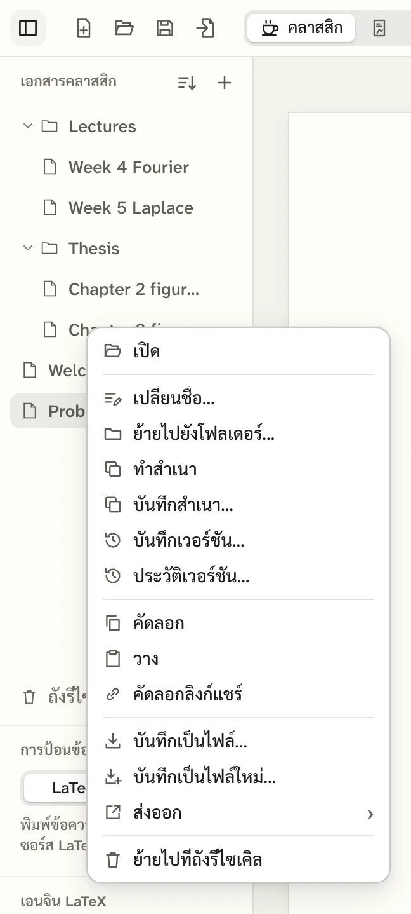
- บันทึกลงเครื่อง: CtrlShiftS เขียนไฟล์
.diagramtexใน Chrome และ Edge ไฟล์จะเชื่อมไว้ CtrlS บันทึกลงไฟล์นั้น - เปิด: CtrlO หรือลากไฟล์
.diagramtexมาวางในแอป - สร้างโฟลเดอร์: ใส่เครื่องหมายทับในชื่อ เช่น
Physics/Lab 1ลากไฟล์ไปวางบนโฟลเดอร์ - เรียงรายการ: ปุ่มเรียงข้าง +
- ย้อนกลับไปสถานะก่อน: คลิกขวาที่ไฟล์ ประวัติเวอร์ชัน… ส่วน บันทึกเวอร์ชัน… เก็บเวอร์ชันที่ตั้งชื่อไว้
- กู้ไฟล์ที่ลบ: CtrlZ หรือเปิด ถังรีไซเคิล (เก็บ 30 วัน)
- แชร์: คลิกขวา คัดลอกลิงก์แชร์ ไฟล์อยู่ในลิงก์
- สำรองทั้งหมด: คลิกขวาที่ว่างในรายการ ส่งออกไฟล์ทั้งหมด…
งานบันทึกอัตโนมัติในเบราว์เซอร์ จุดข้างโลโก้: เขียว บันทึกลงไฟล์แล้ว เหลือง ยังไม่บันทึกลงดิสก์ น้ำเงิน อยู่ในเบราว์เซอร์เท่านั้น แดง บันทึกไม่ได้ ควรเก็บสำเนา .diagramtex ของงานสำคัญ
แป้นพิมพ์ลัด
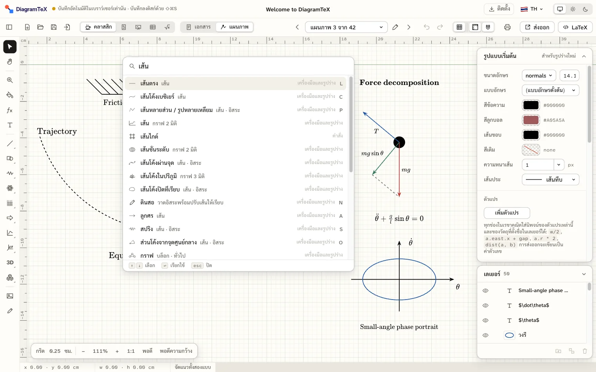
| แป้น | การทำงาน |
|---|---|
| V L A C P | เลือก เส้น ลูกศร เส้นโค้ง เส้นหลายท่อน |
| O S R E | ส่วนโค้ง สปริง สี่เหลี่ยม วงรี |
| B D T M | ลูกบอล จุด ข้อความ สูตร |
| I N H | รูปภาพ ดินสอ มือจับ |
| CtrlK | ค้นหาทุกอย่าง |
| Shift / Alt | มุม 15° และจัตุรัส / ไม่จัดแนว |
| Space+ลาก, Ctrl+เลื่อน | เลื่อนมุมมอง ซูม |
| Ctrl+ − 0 | ซูมเข้า ออก 100% |
| CtrlZ / CtrlShiftZ | เลิกทำ ทำซ้ำ |
| CtrlD, CtrlG, CtrlR | ทำสำเนา จัดกลุ่ม หมุน 90° |
| Ctrl] / [ | นำไปข้างหน้า ส่งไปข้างหลัง |
| CtrlB I U | ตัวหนา ตัวเอียง ขีดเส้นใต้ (ขณะแก้ข้อความ) |
| Enter | แก้ข้อความหรือบล็อกที่เลือก |
| CtrlEnter | เสร็จสิ้น (ในตัวแก้ไข) คัดลอก PNG (โหมดด่วน) |
| Esc | ยกเลิกการลาก ออกจากตัวแก้ไข |
| CtrlS / CtrlShiftS / CtrlO | บันทึก บันทึกเป็นไฟล์ เปิด |
| CtrlE / CtrlShiftE | โค้ด TikZ, LaTeX ทั้งเอกสาร |
| CtrlP | พิมพ์หรือ PDF |
ความใกล้เคียงกับ LaTeX
พื้นที่วาดใช้เรขาคณิตตามแต่ละแพ็กเกจ หมึก 99.5% อยู่ห่างจาก PDF ไม่เกินครึ่งมิลลิเมตร แบบอักษรต่างเล็กน้อย (ภาพตัวอย่างใช้ KaTeX หรือ Temml) การตัดบรรทัดจึงอาจต่างกัน โค้ดที่ตัวแก้ไขวาดไม่ได้จะถูกเก็บไว้และเห็นเฉพาะใน PDF โดยตัวแก้ไขแจ้งบรรทัดนั้น ดูผลการวัดทุกชนิดใน PARITY.md
ออฟไลน์และความเป็นส่วนตัว
- งานอยู่ในเครื่องของคุณ ไฟล์อยู่ในเบราว์เซอร์ ไม่มีการอัปโหลด ไม่ต้องมีบัญชี ไม่มีการติดตาม ไม่มีโฆษณา
- ออฟไลน์: หลังเปิดครั้งแรก ทุกอย่างใช้ได้โดยไม่ต้องต่อเน็ต การคอมไพล์ดาวน์โหลดเอนจิน TeX ในครั้งแรก
- สถิติเดียวที่เก็บ: จำนวนคำขอของ Cloudflare ที่โฮสต์ (คำขอ ข้อผิดพลาด ประเทศโดยประมาณ) ไม่มีคุกกี้หรือสคริปต์
- อัปเดต: จุดสีเหลืองอำพันหน้าเลขรุ่นที่ด้านล่างรายการไฟล์ คลิกเพื่อโหลดรุ่นใหม่
- โอเพนซอร์ส ภายใต้ GNU AGPL v3.0 โฮสต์เองได้
การใช้ AI เชิงกำเนิด
DiagramTeX พัฒนาด้วยความช่วยเหลือของ AI เชิงกำเนิด โค้ด การทดสอบ และเอกสารส่วนใหญ่เขียนด้วยผู้ช่วยเขียนโค้ด AI โดยผู้พัฒนากำกับ ตรวจสอบ และทดสอบ ตัวแอปเองไม่ใช้ AI และไม่ส่งสิ่งที่คุณวาดไปยังบริการ AI
คำถามที่พบบ่อย
สิทธิ์การใช้เนื้อหาที่สร้าง
ตัวโปรแกรม DiagramTeX ใช้สัญญาอนุญาต GNU AGPLv3 แต่แผนภาพ โค้ด LaTeX รูปภาพ PDF และเนื้อหาที่คุณสร้างไม่ได้อยู่ภายใต้ AGPL เพียงเพราะสร้างด้วยโปรแกรมนี้ ใช้ในงานวิชาการ งานเชิงพาณิชย์ หรือเอกสารที่ไม่เปิดเผยได้โดยไม่มีข้อผูกพันเพิ่มเติมจาก DiagramTeX เนื้อหาของบุคคลที่สามยังมีสัญญาอนุญาตของตนเอง
ใช้กับ Overleaf ได้ไหม?
ได้ กด CtrlE คัดลอก วางในโครงการ และโหลดแพ็กเกจตามบรรทัดแรก
ใช้บนมือถือและแท็บเล็ตได้ไหม?
แท็บเล็ตใช้ได้ มือถือหรือหน้าต่างเล็กกว่า 600 × 500 พิกเซลจะแนะนำให้ใช้จอใหญ่ขึ้น แต่ยังคัดลอกสูตรเป็น PNG หรือ SVG ได้
วาดได้ใหญ่แค่ไหน?
หลายหมื่นวัตถุ การแก้ไขยังลื่นไหลที่ 20,000 วัตถุ
แผนภาพเก็บที่ไหน?
ในเบราว์เซอร์ ใช้ บันทึก เพื่อเก็บไฟล์ .diagramtex
หากตัวแก้ไขวาดบางอย่างไม่ได้?
พิมพ์ในช่องโค้ดของตัวแก้ไข ระบบเก็บและส่งออกตามที่เขียน